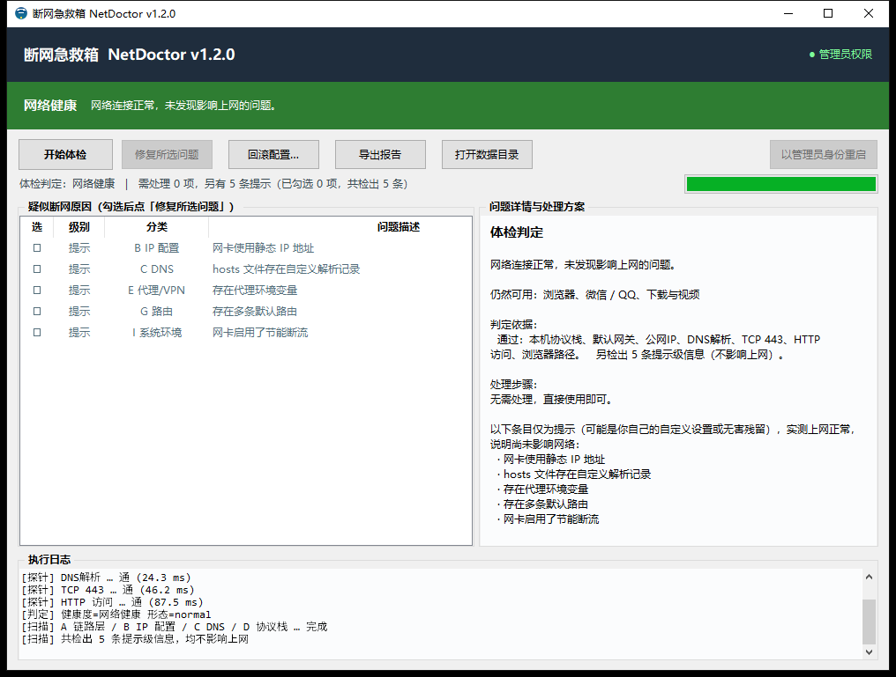
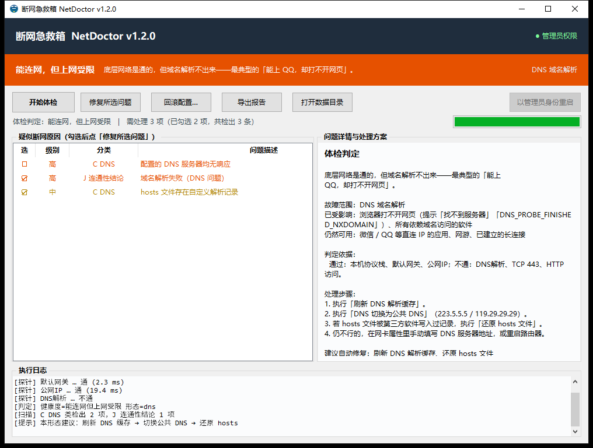

这是什么
电脑突然上不了网，常见做法是重启、重装驱动、见设置就改，往往越弄越糟。这个工具把「排查断网」拆成固定几步：先用分层探针判定当前是否正常、断在哪一环，再把 40 余项可能原因一次性列出来，按需勾选修复，修完自动复测。
动手之前先把配置备份落盘，改坏了能一键还原。图形界面给日常用，命令行可脚本化、可输出 JSON。
扫描阶段是只读的：遍历检查项时不改动任何系统设置，只有你勾选并确认后才执行修复动作。
界面

窗口分三块：顶部是判定横幅，颜色即结论（绿＝网络健康、橙＝能连网但上网受限、红＝完全断网），右侧标出故障范围；中部左列是「疑似断网原因」清单，带级别、分类与问题描述，勾选即代表要处理；右列「问题详情与处理方案」写判定依据、分步处理建议和仍可用的应用；底部执行日志按时间线记下每一层探针的结果。

判定到真实故障时，界面会指出断在哪一环，并给出该形态专属的处理步骤与建议勾选的修复动作——比如域名解析故障只需刷新缓存、切公共 DNS、还原 hosts，不必去动网卡。
怎么判
判定不靠猜，靠分层探针：本机协议栈 → 网关 → 公网 IP → DNS 解析 → DNS 服务器 → TCP 443 → HTTP → 浏览器路径 → MTU，哪一层断了就停在哪一层报原因，几秒内出结论。
| 判定维度 | 输出 |
|---|---|
| 健康度 | 网络健康 / 能连网但上网受限 / 完全断网，共 3 档 |
| 故障形态 | 9 种，各自带一套处理预案 |
| 浏览器路径 | 按系统代理实测「浏览器那条路」，区分「只是浏览器上不了网」与「整机全断」 |
| 提示级条目 | 实测正常时，hosts 自定义记录、静态 IP、代理、网卡节能等可能是你自己设置的项，只提示、不计入需处理 |
健康度只由实测连通性决定。既然探针证明能上网，就不把「你可能是故意这么配的」当成故障，也不会自动勾选任何修复动作——避免把好配置改坏。
修复与回滚
17 个修复动作分两档。稳健档可逆、无需重启：刷新 DNS 缓存、复位代理设置、重新获取 IP、还原 hosts 等；进阶档是协议栈与防火墙重置，需要二次确认并重启。
执行修复前，hosts、注册表代理设置、IP 配置、路由表、MTU、服务启动类型、网卡电源管理整体落盘到 backups/<时间戳>/，并写一份清单记录每项的来源与还原方式。备份不成功就不动手。
修完自动复测。通了就报成功并给出备份路径；仍不通时，会先判断「已修复的项是否失效」——问题确实修好却还是上不了网，多半在线路、硬件或运营商侧，这时明确告知该找谁，而不是继续瞎改。
回滚按备份清单逐项还原，可选任意历史备份点；界面按钮与 --restore 命令等价。
命令行
| 参数 | 作用 |
|---|---|
| （无参数） | 打开图形界面 |
| --quick | 快速体检：秒级判定网络是否正常、断在哪一环 |
| --scan | 完整扫描并打印诊断结果，加 --fast 跳过慢检查 |
| --fix | 扫描后询问是否修复；加 --auto 则全自动不询问 |
| --advanced | 允许执行进阶修复（协议栈 / 防火墙重置） |
| --json -o 文件 | 输出 JSON，便于脚本消费 |
| --restore [时间戳] | 回滚最近一次或指定备份 |
| --report-dir 目录 | 指定诊断报告输出目录 |
退出码：0 成功 / 1 用户取消 / 2 备份不存在 / 3 回滚有失败项 / 4 权限不足。每次运行还会生成 txt 与自包含 HTML 报告，便于留档或转给运维。
安全与限制
修复类操作需要管理员权限，程序会申请提权，并只在你确认后执行。
| 设计 | 做法 |
|---|---|
| 扫描零改动 | 全部检查项均为只读探测 |
| 先备份后修复 | 配置快照落盘成功才允许执行 |
| 动作分档 | 进阶档默认不勾选，需二次确认 |
| 不依赖高危工具 | 注册表走 winreg API、服务走 WMI / PowerShell，不调用 reg.exe、sc.exe |
| 可回滚 | 备份清单记录每项来源与还原方式 |
已知限制：仅支持 Windows 10 / 11 及以上；网络状态采集优先用 PowerShell 的 NetTCPIP 模块，缺模块的老系统自动降级为 netsh 文本解析；上网行为管理、802.1X 准入认证、运营商侧故障无法从本机判定，工具会明确提示需要联系专业人员；未经代码签名时，个别杀毒软件可能对打包产物误报。
它会改系统设置。工具先备份、修复可回滚，但断网排查本身存在风险；公司或校园网环境请先问过网络管理员再动手。
- 只在本机运行，不收集、不上传任何设备信息；探针只做连通性检测。
- 不提供任何绕过网络管控、破解或侵入他人设备的能力，修复动作都是 Windows 自带能力的封装。
- 请自行评估使用风险，因修改网络配置造成的后果由使用者承担。